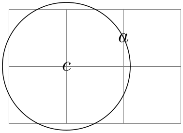

The TikZ and PGF Packages
Manual for version 3.1.9a
Libraries
74 Through Library
TikZ Library through ¶
\usetikzlibrary{through} %
LaTeX
and plain
TeX
\usetikzlibrary[through] % ConTeXt
This library defines keys for creating shapes that go through
given points.
/tikz/circle through=⟨coordinate⟩(no default) ¶
When this key is given as an option to a node, the following happens:
1. The inner sep and the outer sep are set to zero.
2. The shape is set to circle.
3. The minimum size is set such that the circle around the center of the node (which is specified using at), goes through ⟨coordinate⟩.

\usetikzlibrary {through}
\begin{tikzpicture}
\draw[help lines] (0,0) grid
(3,2);
\node (a) at
(2,1.5) {$a$};
\node [draw] at
(1,1) [circle through={(a)}] {$c$};
\end{tikzpicture}